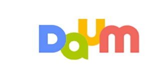

다음(영어: Daum)은 대한민국의 포털 사이트이다.
"한메일"(현재의 다음 메일)이라는 이름으로 대한민국 최초의 웹 메일 서비스를 열었으며,
이 밖에도 온라인 커뮤니티 서비스 "다음 카페", 뉴스 서비스 "다음 뉴스" 등을 서비스하고 있다.

운영 업체는 본래 다음커뮤니케이션이었으나 2014년 10월 합병하여 (주)다음카카오로 사명을 변경하였다가
2015년 9월, (주)카카오로 사명을 변경하였다. 카카오 계정으로만 회원 가입이 가능하다.